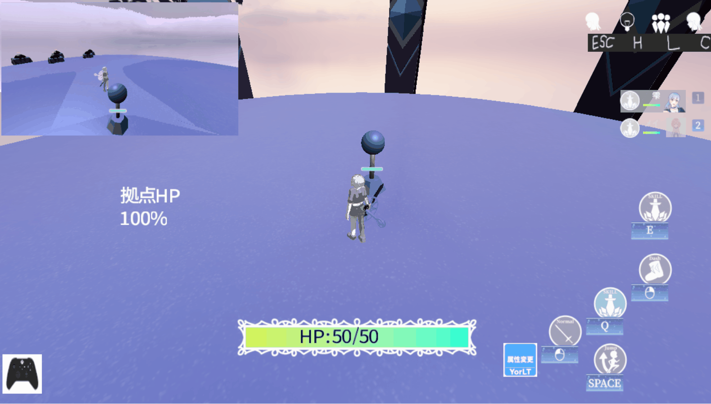

01 / GAME
3Dアクションゲーム
DirectX12 / C++で制作したゲーム作品。プログラマーとしてゲームシステムや各種機能の実装を担当しました。
柏木 遥珈です。日本工学院 ゲームクリエイター科四年制の3年生です。
DirectX12 / C++を使用したゲームプログラミングに取り組んでいます。
このサイトでは、これまでプログラマーとして制作に参加したゲーム作品や、実装した機能・技術を紹介しています。
GAME PROGRAMMER
これまでに制作したゲーム作品です。画像をクリックすると作品の詳細へ移動できます。

DirectX12 / C++で制作したゲーム作品。プログラマーとしてゲームシステムや各種機能の実装を担当しました。
作品情報を順次追加していきます。
DirectX12 / C++で制作したゲーム作品です。
プログラム実装 / ゲームシステム実装 / UI実装
DirectX12 / C++
ゲームプログラミングに関連する制作物や技術検証を掲載予定です。
プログラマーとして学習してきた技術や、ゲーム制作での実装経験をまとめて掲載予定です。
GitHubで制作物やコードを公開しています。
GitHubを見る ↗